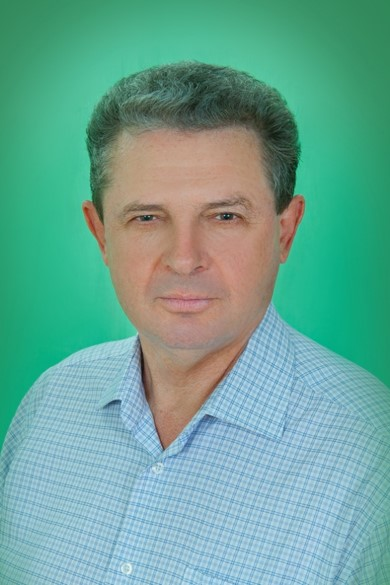
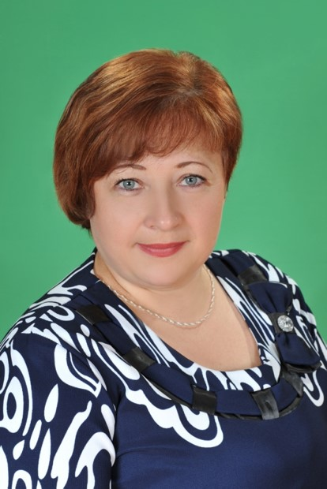

Имя Ирины Викторовны неразрывно связано с образованием Сальского района, гимназией №2, в которой она проработала более 27 лет сначала учителем, заместителем директора по учебно-воспитательной работе, а затем в должности директора.
Именно под её руководством в 2005 г школа №2 получила статус гимназии, а в 2007 г победила в конкурсе общеобразовательных учреждений, внедряющих инновационные образовательные программы в рамках приоритетного национального проекта «Образование». Первой в районе Ирина Викторовна
начала работу по углубленному изучению иностранного языка, первой стала реализовывать программу «Одаренные дети», в результате работы над которой гимназия на протяжении многих лет сохраняет первенство в городе по количеству победителей и призеров предметных олимпиад различного уровня. Первая, первая, первая… Ирина Викторовна всегда стремилась быть первой во всём. Невозможно перечислить всё, что создано ею в гимназии. Она жила ради школы, дорожила каждым учителем и ребёнком.
Будучи неординарной личностью, замечательным педагогом, Ирина Викторовна была сердцем, мозгом и душой педагогического коллектива. Гимназия стала для нее настоящим родным домом, здесь она реализовала себя как прекрасный специалист, грамотный и ответственный руководитель, замечательный учитель, пример трудолюбия и жизнелюбия.
2011-2014

Ковалёв Александр Алексеевич
Ковалев Александр Алексеевич, ветеран педагогического труда, Почётный работник общего образования РФ, директор школы №2 имени Карла Маркса, гимназии №2 г. Сальска, учитель физики, профессионал своего дела.
40 лет своей жизни Александр Алексеевич бескорыстно отдал Сальскому образованию,
благородному делу обучения и воспитания детей, продолжив педагогическую династию.
В 1976 году молодым специалистом пришёл он в школу №2 имени Карла Маркса.
Первые уроки, первое классное руководство, чувство ответственности и долга
сформировали нравственные принципы и твёрдость характера, которые разглядело
и руководство Сальского района. И 1984 год ознаменовался для него важным событием
в педагогической деятельности – назначением на должность директора школы.
Очень молодым, в 29 лет, он начал нелёгкий путь директора школы. Общий стаж
руководителя образовательного учреждения Александра Алексеевича составляет почти 30 лет.
Без преувеличения можно сказать, что он относится к золотому фонду педагогов
нашего района и области. Учитель с большой буквы, он дал отличные знания сотням
благодарных учеников. Наставник с большой буквы, он передал свой опыт десяткам молодых
педагогов, по крупицам собирал лучших учителей в ставшую родной школу.
Невозможно перечислить всё, что создано им в гимназии: от бытовых условий
до первой в районе локальной сети Интернет. Он жил ради школы, дышал ею, дорожил каждым учителем и учеником.
2014-2022

Ольховская Наталья Владимировна
В 2014 г. Наталья Владимировна была назначена директором МБОУ гимназии № 2 г.Сальска, которая стала для неё родным домом. В ней она проработала 8 лет. Это много или мало для жизни директора школы? Наверное, для любого человека это не просто период в жизни, а огромный путь, полный взлетов и побед, радостей и горестей. Это постоянная и целенаправленная работа по воспитанию детей, самосовершенствованию и формированию единого образовательного пространства. Работая директором гимназии, Наталья Владимировна проявляла свое мастерство и лучшие качества администратора, что позволило педагогическому коллективу вырасти в дружную и сплоченную команду, способную решать любые вопросы обучения и воспитания подрастающего поколения.
Прекрасные организаторские способности, знание психологии людей помогали ей увлечь педагогический коллектив общим делом. Она не боялась внедрять новое в учебно-воспитательный процесс, поэтому учебное заведение успешно осваивало новые педагогические технологии. При этом она старалась сохранить лучшие традиции нашего коллектива. Наталья Владимировна щедро делилась своими идеями, педагогическими задумками, Всегда могла подсказать, порекомендовать, как правильно принять то или иное решение, прийти на помощь в любую минуту, не считаясь с личным временем.
Её коммуникабельность, умение общаться, дружелюбие вызывали искреннее уважение у тех, с кем ей пришлось работать. Она обладала каким-то неугасающим моральным импульсом, умела видеть новое во множестве разных ситуаций и всегда была готова помочь молодым. Соединяя в себе любовь к делу и к своим ученикам, она щедро одаривала духовным богатством и открытостью души всех, кто был с ней рядом.
Именно под руководством Натальи Владимировны МБОУ гимназия №2 г. Сальска стала лучшим образовательным учреждением в Сальском районе. Наталья Владимировна всегда стремилась быть первой и лучшей во всём. Она жила ради гимназии, дорожила каждым учителем и ребёнком.